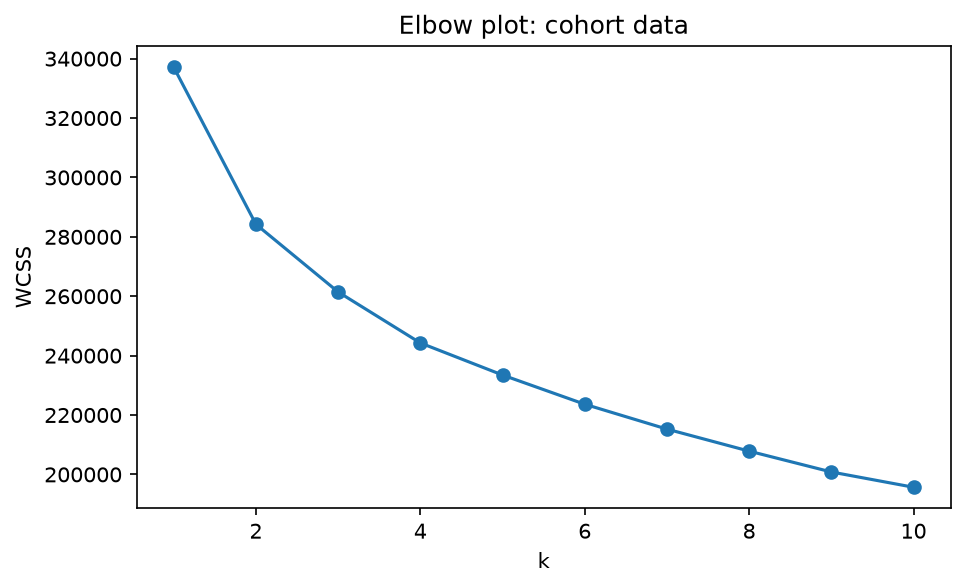
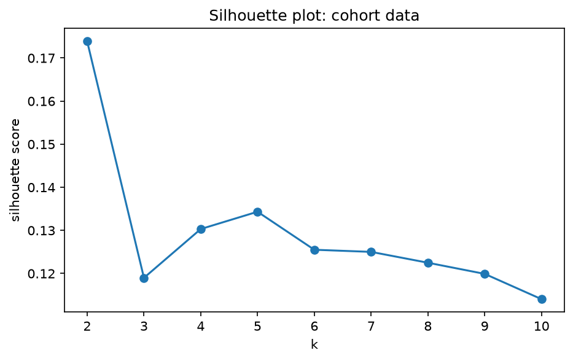
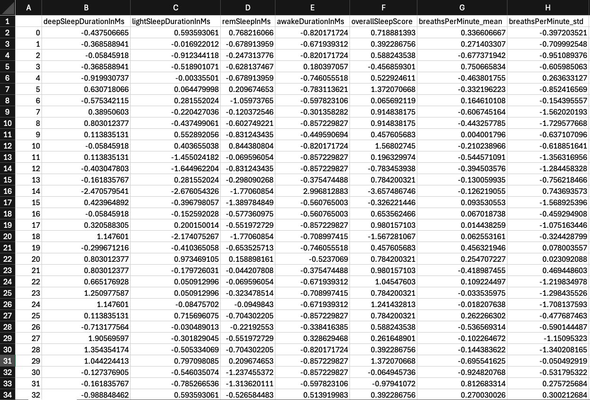
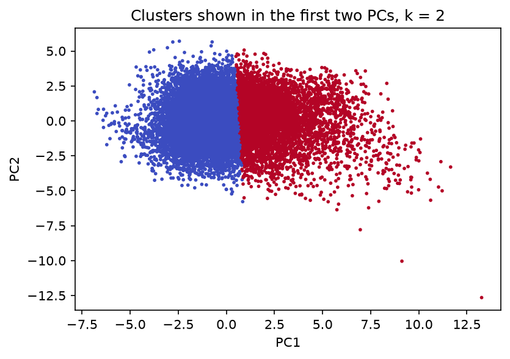
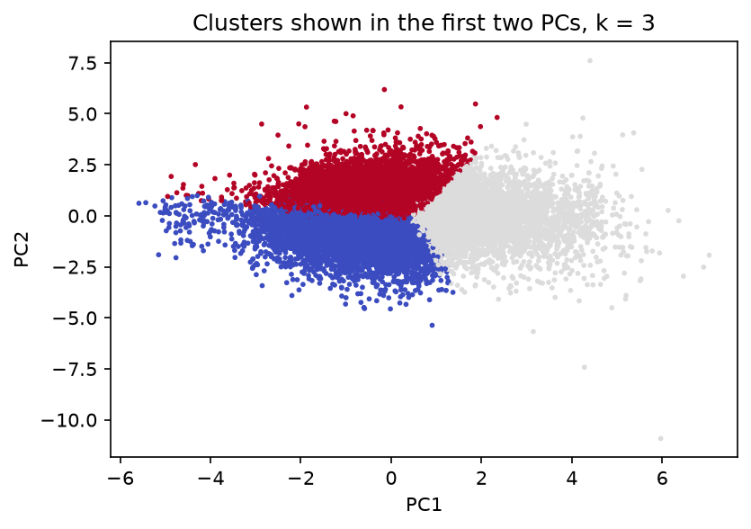
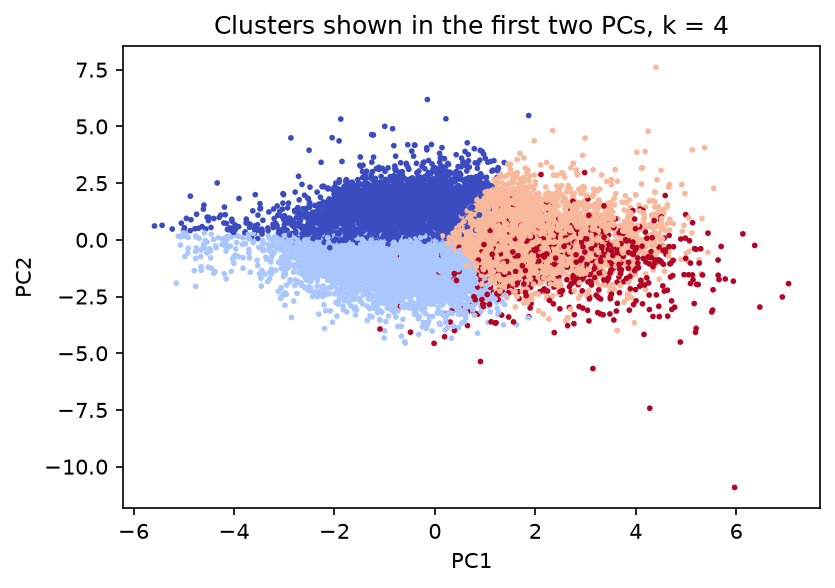
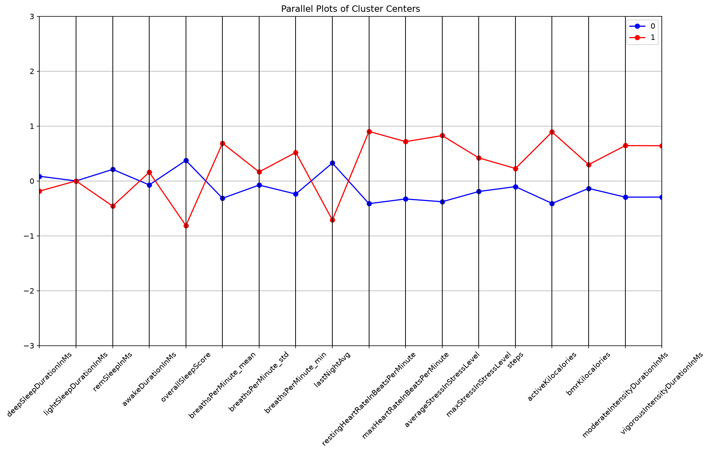
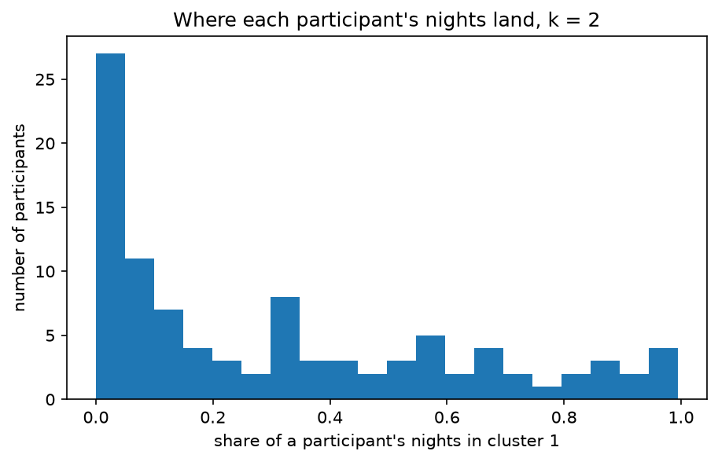
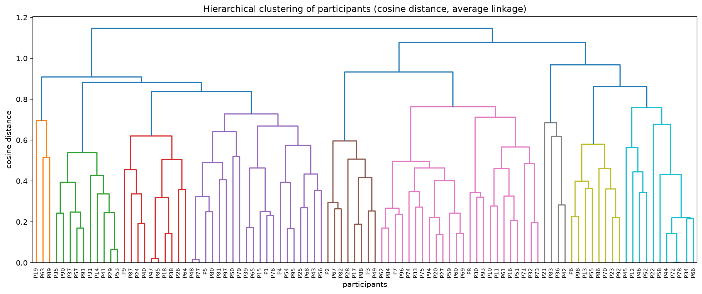
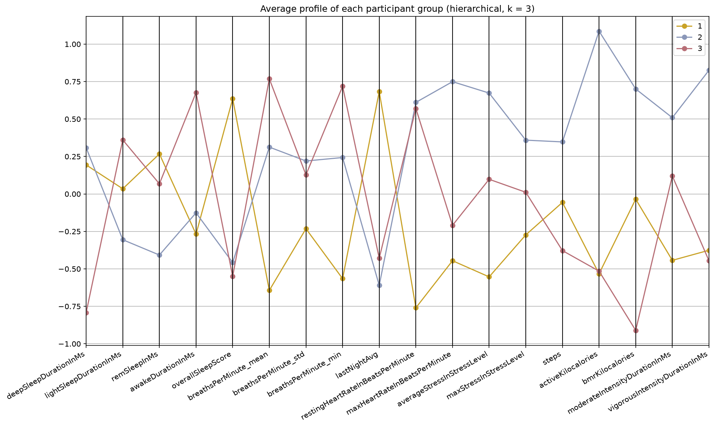

Clustering is the method in which each observation (here, each night) is plotted on a graph. The graph is analyzed and groupings of observations, called clusters, are delineated. Once every data point is labeled as belonging to a specific cluster, the features of the observations belonging to each cluster are analyzed and the most prominent features are pulled out to determine a descriptor or hypothesis for that cluster.
There are two main types of clustering. Partition-based methods, like K-means, set the number of groups (K) before the algorithm is run and sort each observation into one of those groups. There are multiple ways to determine the clusters, but a big one is Euclidean distance. With K-means, utilizing Euclidean distance, the goal is to minimize the total squared distance between each observation and that cluster's center, a value known as the Within Cluster Sum of Squares (WCSS). Since K has to be determined before the algorithm is run, there are two common methods to determine that value. An elbow plot graphs the WCSS against each K-value, and the optimal K is found where the curve sharply levels off. In the silhouette method, each observation is compared between its current cluster (A) and the next closest cluster (B). Distances between observations are calculated using the average distance to B minus the average distance to A divided by the larger of two average distances. This puts the values between -1 and 1. Positive scores are indicative of correct clustering whereas negative scores are indicative of misclassification.


With hierarchical clustering, however, there is no set K-value prior to running the algorithm. Every observation starts as its own group and then each group is merged with its closest neighbor until there is only one remaining group. A tree-like structure called a dendrogram is formed as a visual representation of how each group merges with the next. The height of each merge is the overall distance between the groups. A common rule of thumb is to draw a line, or cut, across the vertical lines that are the largest in length to determine the best number of groups. Each vertical line that is "cut" is representative of one group. For the hierarchical clustering in this project, average linkage was used with cosine distance. With average linkage, the distance between two clusters is the average of the distances between every point in one cluster and every point in the other. Cosine distance is calculated using the angle between two vectors rather than the absolute distance between them.
Before clustering, every pair of columns with a correlation above 0.75 was identified, and one column from each pair was removed (durationInMs, breathsPerMinute_max, lastNight5MinHigh, and minHeartRateInBeatsPerMinute). When nearly redundant information exists, the distance calculation is counting that near-duplicate information twice. This effectively pulls the clusters toward it. Removing one column from each pair of highly-correlated features keeps any single signal from being overrepresented.
All 18 remaining columns were standardized, because the features are measured in different units. If standardization did not occur, the features with large numbers, like sleep in milliseconds, would absolutely skew the distance calculations. On the flip side, features that are made up of smaller numbers, such as breaths per minute, would be underrepresented when compared against features with values of much larger magnitude. To fix this, standardization is applied and each column is rescaled with a mean of zero and a standard deviation of one. This allows every feature to have equal representation during clustering.
For the hierarchical clustering, all observations were grouped by their participant id. Averages were taken for each feature and one row was produced per person (98 rows). These values were standardized again before the dendrogram was created. This was necessary for visualization purposes as a dendrogram with one leaf per night (18,728 leaves) would be unreadable. This method also helps switch the underlying question from "what types of nights exist?" to "what types of people exist?"
The data fed into the clustering is completely numeric and bears no classification labels. The identifier columns (participant, date, cohort) were left out, partly because K-means can't process them, but also so that the algorithm can only see the standardized features and not the answer key. The cluster labels are produced by the algorithm, not given to it, and are then attached to the table afterward so the groups can be analyzed. A sample of the standardized table is shown below, and the full table is linked.

The clustering was carried out in Python, using pandas and NumPy for the data, scikit-learn for K-means, standardization, and silhouette scores, SciPy for the hierarchical clustering and the matching of groups between methods, and Matplotlib and seaborn for the plots.
K-means on the nights
K-means was run for a range of K-values, keeping the best of ten starts at each K. It was difficult to determine an elbow, as the curve in the elbow plot falls steadily with no sharp bend.
The silhouette score plot showed the highest value at K=2, dropped to almost half the size for K=3 and K=4 and continued to trend overall downward up to K=10. With so many scores close to zero, there appears to be a heavy overlap in the observations, evidenced by the scatterplots. Indeed, the observations make one continuous spread rather than distinct groups. The elbow plot is also in agreement, showing no clear bend. K=2 is technically the best but it is not convincing.
In the K=2 plot, the clusters are separated by a straight dividing line that appears to be very close to the center of the continuous cloud. There is no visible gap in these groupings. The K=3 plot is the same cloud of data but now there is a third partition that looks nearly perpendicular to the first line. The K=4 plot is interesting because it labels a fourth cluster that almost looks like it is on top of the first three clusters. This overlap is likely a result of flattening 18 dimensions onto two, since the clusters were formed using all 18 features, and the separation may exist along directions not shown in this view.





Hierarchical clustering on the participants
The hierarchical clustering was run on the 98 participant averages. The largest gap between merge heights (0.111) occurs at three groups, which points to three groups of participants.

Comparing K-means and hierarchical clustering
In K-means, the plot of silhouette scores makes it clear that the best value of K is when k=2 but the elbow plot is a smooth curve and makes it difficult to identify any elbow from visuals alone. However, when looking at the hierarchical clustering, the best value turns out to be 3 clusters. There is some room for debate, seeing that K-means was conducted on an 18,728x18 matrix and hierarchical clustering was performed on a 98x18 matrix. The difference here is that K-means was clustering nights while hierarchical was clustering people. To compare the two methods directly, K-means was also run on the same 98 participants for 2, 3, and 4 groups. When the two methods were compared using a crosstab in pandas, a cluster quantity of three yielded the highest agreement percentage, 82.65%, compared with 79.59% for two and 70.41% for four. This implies that three is the best number of groups for the participants. Because the nights form one continuous spread, this result does not carry over to the nights themselves.
The three participant groups
The three groups below come from cutting the dendrogram at three groups. Each line in the plot is a group's average on every standardized feature.

Group 1 (43 participants). Group 1, on average, exhibits slightly above average deep and REM sleep durations, average light sleep duration and below average awake time. This group's sleep scores and overnight HRV values are higher than average and its breathing rates are the lowest among all three groupings. Its resting heart rate is the lowest of the three, and its max heart rate, average stress and max stress are low. Steps and resting calories are average, and active calories and intensity durations are low. This is the group with the most favorable recovery measures, together with low daytime strain. These are same-day group averages across different people, not trends over time, so they do not show that less activity leads to better sleep.
Group 2 (32 participants). Group 2, on average, exhibits higher amounts of both vigorous and moderate intensity time. They also have a higher bmr, higher active kcals, and slightly above-average steps and max stress. Their average stress level is also high, as are their max heart rate and resting heart rate (mostly recorded during sleep). Their HRV and sleep scores are lower. Group 2 on average also has the lowest HRV, the lowest REM and light sleep, and a low overall sleep score. Whether these records indicate that the people in group 2 are extremely active or less fit is hard to say due to the way Garmin calculates those daily values. Garmin's stress value is based on heart rate variability. Intensity levels are calculated by one's heart rate surpassing a certain threshold. Active kcals are also influenced by heart rate. High basal metabolic rates are also correlated with larger body sizes. But similar readings could result from extremely active people.
Group 3 (23 participants). Group 3, on average, exhibits the lowest resting calories (bmr), which can be associated with a smaller body size. It also exhibits less vigorous intensity time and fewer overall steps. This group also exhibits higher resting heart rates, lower overnight HRV, and is also the group with the highest breathing rates (both average and minimum values). Their sleep durations produce the lowest deep sleep values, higher than average time awake and lower overall sleep scores. This profile is consistent with disrupted sleep, but it is not a diagnosis.
Group 1 shows the best overall recovery metrics, with high HRV and sleep score and low resting heart rate, stress and breathing rate. Group 2 shows poor recovery metrics such as low HRV, high resting heart rate, high stress, low REM sleep and a low overall sleep score. Group 3 also exhibits poor overall recovery metrics, with high average and minimum breathing rates, high awake time (sleep disruptions), low deep sleep, a low sleep score, low overnight HRV and a high resting heart rate. This profile is consistent with disrupted sleep, though it is not a diagnosis, and Garmin's breathing rate is an estimate. The nights themselves formed one continuous spread with weak separation, so the grouping is clearer for participants than for individual nights.